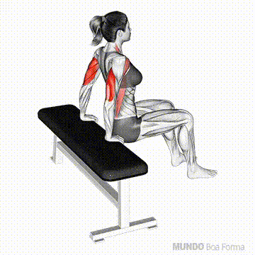

Agachamento Sumo
- Fique de pé com as pernas afastadas além da largura dos ombros e os pés levemente para fora.
- Agache lentamente, dobrando os joelhos e empurrando o quadril para trás.
- Suba novamente à posição inicial e repita.
Flexão Aberta
- Deite-se no chão em posição de prancha, com as mãos afastadas mais que a largura dos ombros.
- Dobre os cotovelos, descendo o corpo em direção ao chão.
- Empurre de volta até a posição inicial e repita.
Flexão Declinada
- Posicione os pés em uma superfície elevada e as mãos no chão.
- Dobre os cotovelos, descendo o peito em direção ao chão.
- Suba novamente e repita.
Trapézio
- Segure halteres ou garrafas com peso, com os braços ao lado do corpo.
- Eleve os ombros o máximo que puder, contraindo o trapézio.
- Segure por 1 a 2 segundos e abaixe lentamente.
Abdominal Infra
- Deite-se de costas, com as pernas estendidas e as mãos ao lado do corpo.
- Eleve as pernas juntas, sem tirar as costas do chão.
- Abaixe as pernas lentamente, sem tocar o chão, e repita.
Abdominal Supra
- Deite-se de costas, com os joelhos dobrados e os pés apoiados no chão.
- Eleve o tronco, contraindo o abdômen, até que os ombros saiam do chão.
- Volte à posição inicial devagar e repita.

Tríceps Sentado
- Sente-se em um banco, segurando um peso acima da cabeça com as duas mãos.
- Dobre os cotovelos lentamente, abaixando o peso atrás da cabeça.
- Estique os braços novamente e repita.
Tríceps Francês
- Deite-se de costas em um banco, segurando um peso com ambas as mãos.
- Estenda os braços acima do peito.
- Dobre os cotovelos, abaixando o peso em direção à testa, e retorne à posição inicial.